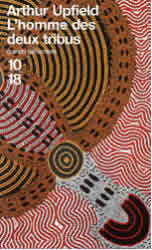

PREMIER CHAPITRE: "L’homme des deux tribus" d'Arthur Upfield
Auteur : Claude Izner Traducteur : Michèle Valencia Collection : Grands Détectives N° 2226 Prix : 6,54 € TTC "Laissez-vous guider par l'inspecteur Napoléon Bonaparte au coeur du bush australien..."